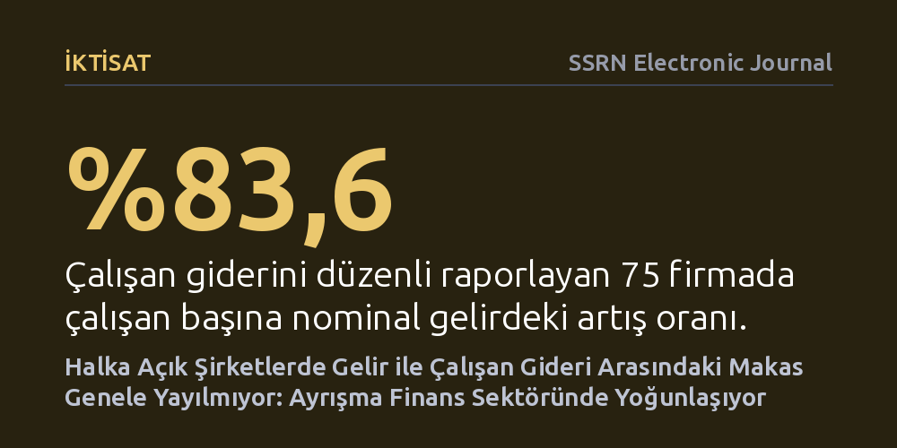

IKTISAT · SSRN Electronic Journal · 2026-10-21
Halka açık şirketlerde çalışan başına gelir ile personel gideri arasındaki makasın rant paylaşımındaki gerilemeyi gösterip göstermediği incelendi. 695 firmanın verileri, makasın genele yayılmayıp finans sektöründe yoğunlaştığını, diğer sektörlerde çalışan giderlerinin gelirden biraz daha hızlı arttığını gösterdi.
Şirket gelirleri katlanırken çalışanların pay alamadığı varsayımının genel bir kural olmadığını, tablonun sektörel dağılıma ve muhasebe bildirim tercihlerine göre kökten değişebildiğini gösterir.

Son yıllarda ekonomi ve kamuoyu gündeminde en sık tartışılan başlıklardan biri, şirketlerin elde ettiği gelir ve kâr artışının çalışanlara ne ölçüde yansıdığı meselesidir. İktisat yazınında 'rant paylaşımı' olarak adlandırılan kavram, firmaların piyasa güçleri veya verimlilik artışları sayesinde kazandıkları ilave gelirlerin bir bölümünü ücretler aracılığıyla emek kesimiyle paylaşacağını öngörür. Ancak son dönemde yapılan bazı prestijli araştırmalar, bu mekanizmanın artık işlemediğini ve şirket gelirleri fırlarken çalışan başına harcamaların çok daha yavaş artarak çalışanların aleyhine bir uçurum oluşturduğunu savunmuştur.
Bu tezin en bilinen dayanaklarından biri, Daron Acemoğlu ve çalışma arkadaşlarının yayımladığı 'Eclipse of Rent-Sharing' (Rant Paylaşımının Sönüşü) başlıklı çalışmaydı. O çalışma, çalışan başına gelir ile personel gideri arasındaki makasın açılmasını, emek kesiminin artık şirket pastasından pay alamadığının somut bir işareti olarak yorumluyordu. Ancak Haochuan Wang tarafından hazırlanan bu yeni takip çalışması, söz konusu sonuca halka açık şirketlerin bilanço verileri üzerinden bu kadar kolay varılamayacağını öne sürüyor. Araştırmanın yanıt aradığı temel soru, bu makas açılmasının gerçekten genel bir emek aleyhtarlığını mı gösterdiği, yoksa sadece belirli sektörlerin ve şirketlerin muhasebe bildirim tercihlerinden doğan bir yanılsama mı olduğudur.
Araştırmacı, şirket gelirleri ile çalışan harcamaları arasındaki bağı derinlemesine incelemek için 2015-2025 yılları arasındaki on yıllık dönemi kapsayan kapsamlı bir veri seti oluşturdu. Bu çerçevede 695 halka açık firmaya ait toplam 7.000 'şirket-yıllık' finansal kayıt toplandı. Ancak halka açık şirketlerin tamamı bilanço ve gelir tablolarında personel giderlerini düzenli veya ayrıntılı olarak raporlamamaktadır. Bu sebeple yazar, incelenen tüm dönem boyunca çalışan giderini kesintisiz beyan eden 75 firmadan oluşan sabit ve çekirdek bir örneklem grubuna odaklandı.
Araştırmanın metodolojisi yalnızca basit oran hesaplamalarıyla sınırlı kalmadı. Yazar, hangi firmaların personel harcamasını bildirip hangilerinin bildirmediğini modelleyen bir ekonometrik bildirim olasılığı analizi kurarak verideki seçim yanlılığını ölçtü. Bunun yanı sıra, Acemoğlu ve ekibinin orijinal çalışmasındaki ekonometrik modeller bağımsız bir denetime tabi tutuldu; Amerika Birleşik Devletleri ve Danimarka verilerine dayalı çıktı tahminlerinin hata payları ve istatistiksel sınırları yeniden mercek altına alındı.
İlk bakışta elde edilen toplu muhasebe verileri, çalışan aleyhine açılan makas tezini doğrular nitelikteydi: Çalışan giderini düzenli raporlayan 75 firmalık örneklemde, çalışan başına nominal gelir %83,6 oranında artarken, çalışan başına personel gideri sadece %51,0 oranında yükselmişti. Bu iki verinin birlikte değerlendirilmesiyle hesaplanan toplam gider-gelir oranı belirgin şekilde gerilemiş görünüyordu. Ne var ki veriler sektörel düzeyde parçalara ayrıldığında bu genel algıyı sarsan kritik bir bulguya ulaşıldı: Gelir ile çalışan gideri arasındaki söz konusu ayrışmanın neredeyse tamamı finans sektöründe faaliyet gösteren 50 şirkette toplanıyordu.
Finans sektörü dışındaki geriye kalan 25 firma incelendiğinde ise tam tersi bir tabloyla karşılaşıldı. Finans dışı bu şirketlerde çalışan başına toplam personel gideri, çalışan başına gelirden biraz daha hızlı bir büyüme sergiledi. Başka bir deyişle, tüm firmalar tek bir potada eritildiğinde ortaya çıkan 'çalışan aleyhine açılan makas', reel sektörün genelini yansıtmıyordu; finans kuruluşlarının devasa işlem hacimleri, faiz ve piyasa gelirleri gibi kendine has bilanço özelliklerinin bir sonucuydu.
Raporlama modelinin incelenmesi de yöntemsel açıdan ciddi bir zaafı gün yüzüne çıkardı. Personel harcamasını raporlayan şirketlerin dağılımında ağır bir dengesizlik mevcuttu ve bazı sektörlerde bu bilgiyi beyan eden tek bir firma bile bulunmuyordu. Bu nedenle araştırmacı, bu 75 firmadan elde edilen bordro sonuçlarının ekonominin geneline genellenemeyeceğini vurguladı. Orijinal makalenin denetiminde ise ABD çıktı etkilerinin yüksek belirsizlik taşıdığı, buna karşılık Danimarka tahminlerinin daha dar ve kesin sınırlar sunduğu tespit edildi.
Elde edilen bulguların iktisat tartışmaları açısından taşıdığı en temel ders, halka açık şirketlerin muhasebe kayıtlarının doğrudan 'gerçek üretkenliği' ya da bu üretkenlikten doğan kazancın emek ile sermaye arasındaki gerçek bölüşümünü ölçemeyeceğidir. Muhasebedeki gelir rakamı; piyasa değerlemeleri, sektörel döngüler, finansal gelirler ve şirketlerin bilanço sunum tercihlerinden doğrudan etkilenen değişken bir büyüklüktür.
Yazar, ortaya koyduğu bu sektöre dayalı muhasebe sonuçlarının, Acemoğlu ve arkadaşlarının orijinal çalışmasındaki nedensel ücret ve emek payı bulgularını ne kesin olarak doğruladığını ne de tamamen çürüttüğünü belirtmektedir. Ancak araştırma çok kritik bir uyarı yapmaktadır: Şirketlerin bilanço oranlarına bakarak 'rant paylaşımı tamamen bitti' veya 'emek payı tüm sektörlerde eriyor' şeklinde toptancı genellemeler yapmak yanıltıcıdır. Emek ve sermaye arasındaki bölüşüm dinamiklerini sağlıklı tartışabilmek için sektörel ayrışmaları ve muhasebe raporlama yanlılıklarını hesaba katmak zorunludur.